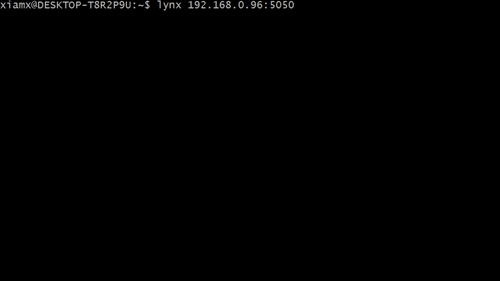

SSR-Proxy
Prerender your single page app for better SEO and support on legacy browsers
Project maintained by xiamx Hosted on GitHub Pages — Theme by mattgraham
SSR-Proxy — Server-Side Rendering Proxy
Prerender your single page app for better SEO and support on legacy browsers.
SSR-Proxy is a HTTP proxy which you can put in front of your existing Single Page App server to achieve server-side rendering. With SSR-Proxy, we take a different approach in Server-Side Rendering. Instead of rendering frontend components in Nodejs, we use an actual headless browser — PhantomJS to render SPA and proxy the rendered HTML to the client.
Demo
Directly accessing an async javascript rendered page

Accessing an async javascript rendered page through SSR-Proxy


Get started
Install Node.js with version 6.4.0 and higher. Then follow the steps below.
git clone git@github.com:xiamx/ssr-proxy.git
cd srr-proxy
npm install
# make the configuration needed in config.json
# change upstream to the server of your Single Page App
npm startMotivation
Quite a number of web apps built today are Single Page Apps (SPA.) [1] With React, Vuejs and other tools, building complex SPA is easier than ever before. One of the biggest challenge faced by SPAs is the diffculty in SEO (Search Engine Optimization.) When a webpage is asynchronously rendered via javascript (e.g. use ajax to fetch some documents and then display it inside a div), search engines cannot index them properly [2, 4].
Granted, most SPAs don't need to be indexed by search engines, But such demands have pushed the development of Universal Rendering, or Server-Side Rendering of frontend components. Universal Rendering does not come for free, developer now need to manage additional complexity of components lifecycles on both client-side and server-side. [3]
With the approach offered by SSR-Proxy, we don't need code-level universal rendering. Hence, we can focus on developing a SPA that is designed to render in a browser, greatly reducing the complexity.
Configuration
SSR-Proxy ships with a default configuration in config.json which should be usable in most scenarios. But you might need to modify it to get the desired behavoir.
-
upstream: The root url of your single page app. SSR-Proxy will proxy all requests to this url. -
idleMax: SSR-Proxy consider a page rendered and send it back to the client if there are no network activity for more thanidleMaxmilliseconds. A default value of500is set. If your SPA server is slower than that or your page renders with partial content, you may consider increasing this number. Decreasing this number shortens the page loading time, at the cost of possible missing content. -
nodeHttpProxy: A set of options passed to when creating node-http-proxy server. -
phantomjs.argv: Commandline arguments when starting phantomjs. -
port: Port that this proxy server listens to.